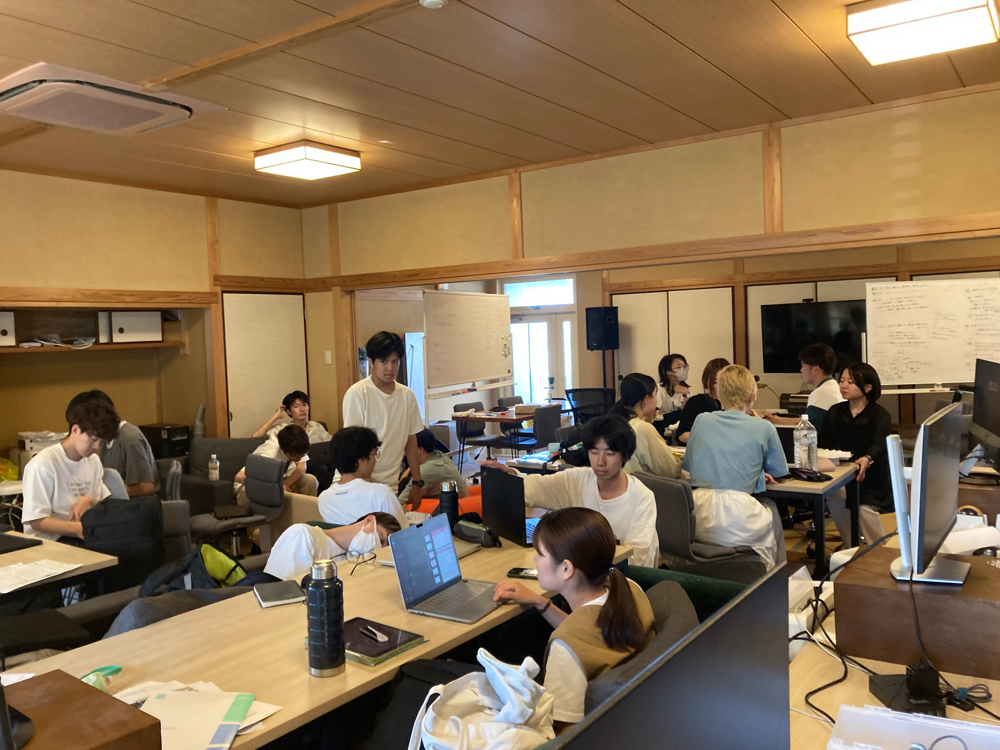
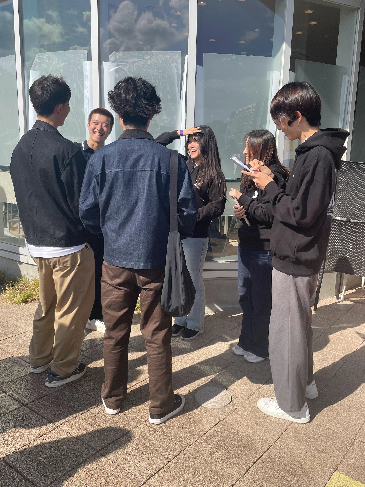
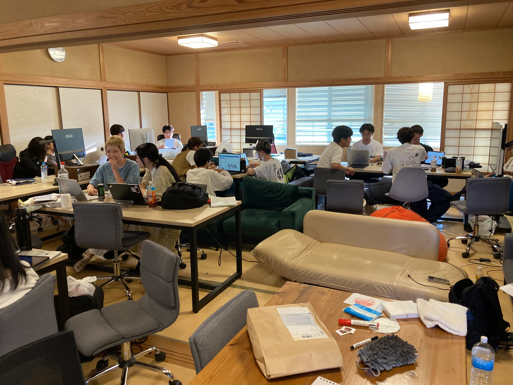
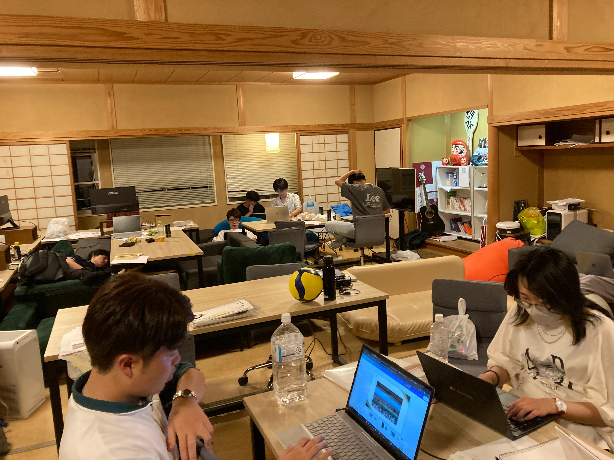
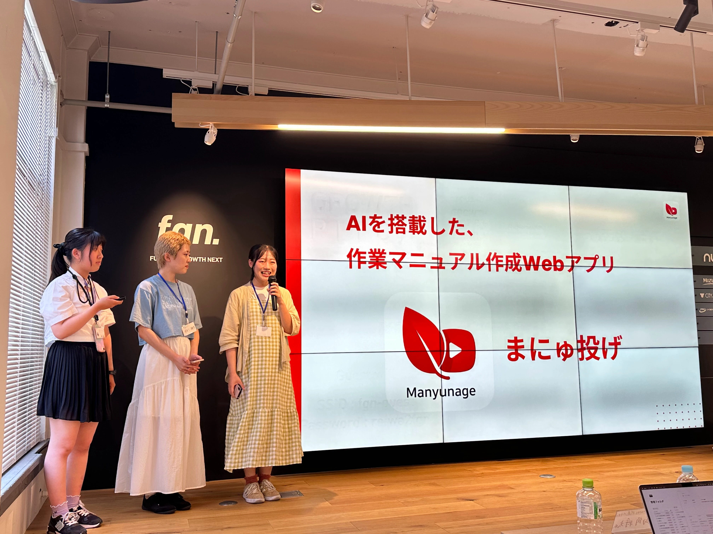

ゼロイチ
ABOUT

挑戦の第一歩を、最高の熱量で。
「ゼロイチ」は、新入部員を対象としたQUSIS独自の**新規事業創出プログラム**です。2021年の開始以来、多くの学生がこの場所から自らのアイデアを形にし、社会へと踏み出してきました。
1ヶ月という限られた時間の中で、チーム結成から市場調査、プロトタイプ開発、そして最終ピッチまでを一気に駆け抜けます。
FEATURES
インプットコンテンツ
QUSISの先輩によるインプットコンテンツを通して、事業立案の基本を学びます。ただのインプットではなく、コンテンツを受けた後に行動に移せるように、「行動」をベースにおいた内容を提供します。
メンター制度
先輩メンバーが1チーム1人付き、即座にFB（フィードバック）をもらえる環境を構築。プレイヤーの行動が最大化されるようサポートします。
検証費の支給
前年まで、行動の大きな障害として金銭の問題がありました。交通費やその他検証費として、1チームに4万円を支給することで、行動における大きな障壁を取り除きます。
TIMELINE
キックオフ合宿
チームビルディング、課題選定を行い、最高のスタートダッシュを切ります。

FIRST WEEK
課題仮説の設定と、インタビューを開始します。

SECOND WEEK
インタビューを通した事実からインサイトを見つけていく、これを高速で繰り返す。

中間合宿
これまでの課題仮説、ターゲット設定の整理、そして解決策仮説へと進めていきます。

THIRD WEEK
解決策仮説を立て、それを検証していくことをヒアリングを通して繰り返す。

FINAL WEEK
ビジネスモデルや競合比較などを検討していき、デモデイに向けたピッチ資料を作成していく。

DEMO DAY @FGN
福岡市のスタートアップ拠点「FGN」にて、投資家や起業家の前で渾身のプレゼンテーション。1ヶ月の成果を解き放ちます。

参加登録（Luma）埋め込みエリア